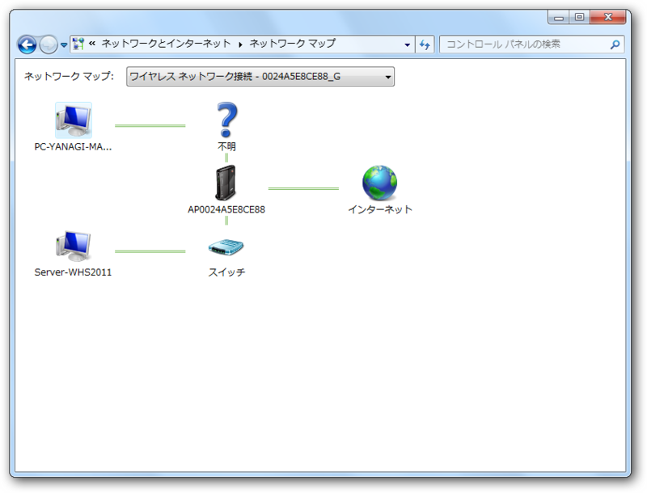
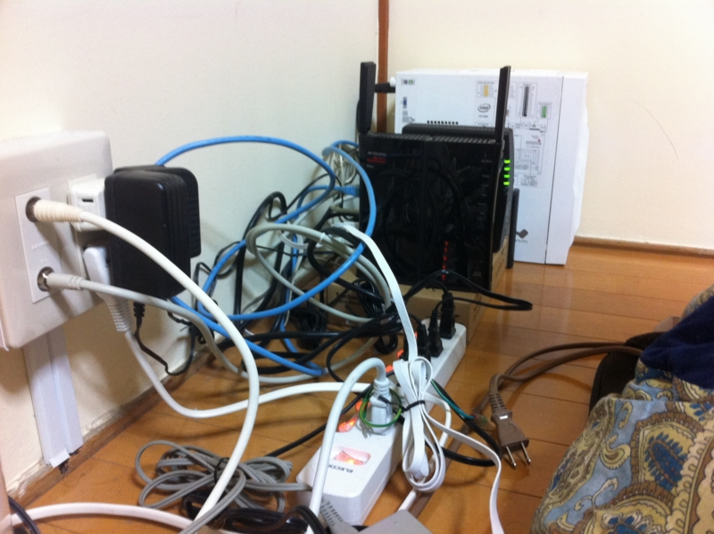
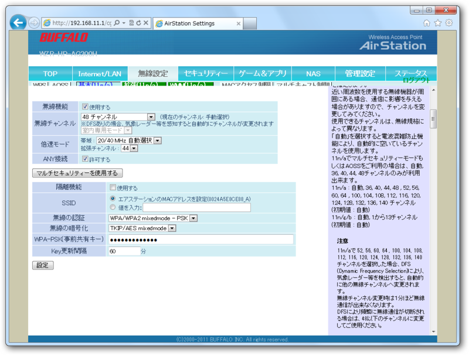

Buffalo WZR-HP-AG300H の調子がすこぶる悪い
公開日：

ネットワーク図ではシンプルな構成だけれど……

実際はだいぶヒドい。今週末は忙しいので、そのあとにテーブルやケーブルをまとめるグッズなんかを買って、ちょっと整理整頓しようと思う。

それにしても、うちのバッファローのルーター（Buffalo WZR-HP-AG300H）の調子が悪い。無線がブチブチ切れる。有線は非常に安定しているので、Windows Home Server はルーターの隣に移設して、有線LANで接続した。メインマンシンはそうもいかないのでルーターの設定も色々いじってみたのだけど、少しマシになったかな？ という程度で、やはり不安定なまま。
無線LAN無線接続が頻繁に切れたり、通信速度が遅かったりするときの対処方法 | BUFFALO バッファロー